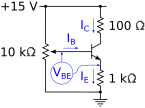
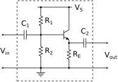
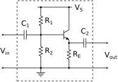

Next: 5 Operational Amplifiers (Op Amps) Up: PHYS328W Notes Previous: 3 Diodes
A transistor is an active device, meaning that it enables the control of a current by an input signal. There are several different types of transistors, each suited to different applications. Here, we will focus on bipolar junction transistors (BJTs). Transistors have three terminals called the emitter, the collector, and the base. A BJT consists of two p-type – n-type junctions, like those in a diode. In an NPN transistor, the base is p-type semiconductor, and the emitter and collector are n-type. In a PNP transistor, the polarities are reversed.
Schematic symbols for BJTs and an illustration of the ordering of the pins on the transistors we will use in lab are shown in Figure 10. The arrows on the schematic symbols indicate the direction of the collector current .
Transistors operate in one of three states, which we will refer to here as “off”, “on” (also “saturation”), and the “active region.” In amplifiers, transistors operate in the active region. In digital and switching applications, transistors rapidly transition between “off” and “on” states. Transistors in voltage regulators stay in the the “on” state.
The Ebers-Moll equation describes the relationship between the collector current and the voltage drop from base to emitter by
where is the reverse leakage current from the emitter to the base, C is the elementary unit of charge,
J/K is the Boltzmann constant, and
C is the elementary unit of charge,
J/K is the Boltzmann constant, and  is the
absolute temperature (in Kelvin). With typical doping levels, the
leakage current arising from the “intrinsic” behavior of the pure
semiconductor is very small, and the second term (-) is
negligible, giving a simple exponential dependence of on
.
is the
absolute temperature (in Kelvin). With typical doping levels, the
leakage current arising from the “intrinsic” behavior of the pure
semiconductor is very small, and the second term (-) is
negligible, giving a simple exponential dependence of on
.
This current-voltage relationship is the same as for the diode, plotted qualitatively in Figure 9. We usually operate diodes in saturation, at the forward voltage drop ( V for silicon pn junctions). In some applications, like the transistor switch described in Section 4.2, we operate transistors in the same way. Below saturation in the active region, we need the Ebers-Moll equation to model transistor behavior. The schematic of the circuit you will use in lab to investigate the Ebers-Moll equation is shown in Figure 11. The variable resistor enables you to adjust from 0 V to saturation. The 100 resistor gives you a way to determine the collector current from a voltage measurement, and the 1 k resistor keeps the collector and emitter currents under control to protect the transistor.
In the active region, the vs. curve has a small, nonzero slope, which manifests itself as a small emitter resistance,
which at room temperature is .
In a bipolar junction transistor, the diode drop across the collector-base junction is smaller than that of the base-emitter junction. This means that when a transistor is operating in saturation, the voltage drop from collector to emitter is smaller than . For a standard silicon transistor in saturation, V.
In saturation, the collector current is greater than the current flowing from the base to the collector by a factor , which is on the order of 100 and depends on temperature,
When is significantly below 0.7 V, the exponential in Equation 29 is orders of magnitude smaller than its saturation value, and the collector and emitter currents and are effectively turned off.
For a given transistor, there are maximum rated values of , , and . If these values are exceeded, the transistor will fail. You might wonder, given the exponential relationship between and the collector current of Equation 29, what keeps the current from growing beyond a safe level and destroying the transistor. When we operate a transistor in saturation, where the exponential really takes off, other devices in the circuit must limit the current, and we don't need to think about where we are on the exponential curve. The same is true for diodes.
 , where
.
, where
.
The circuit shown in Figure 12 implements a
transistor as a switch controlling power delivered to the load
resistance  . Closing the mechanical switch drives a current from
the base to the emitter. With a proper choice of , the base
current is large enough to saturate the transistor, bringing the base
voltage to V. The collector current produces a voltage
drop across of . The collector voltage is very close to
the emitter ( V), and the right branch of the circuit
behaves as if the collector is grounded. Opening the switch
brings significantly below 0.7 V, and the transistor shuts
off power to the load.
. Closing the mechanical switch drives a current from
the base to the emitter. With a proper choice of , the base
current is large enough to saturate the transistor, bringing the base
voltage to V. The collector current produces a voltage
drop across of . The collector voltage is very close to
the emitter ( V), and the right branch of the circuit
behaves as if the collector is grounded. Opening the switch
brings significantly below 0.7 V, and the transistor shuts
off power to the load.
What the point of this? Why not dispense with the transistor, and put the switch in series with the load, as is the case with household wiring? In applications in which the control switch is far away from a load that draws a large current, it is safer to run small control currents over long distances and keep the large currents close to the load.
and the range
of among the make/model of transistor used (see the data
sheet from the manufacturer), it is generally good to use a generous
base current (
).
As long as the supply voltage is appropriate to the load, the load resistance will limit the current, so it does no harm to deliver a larger base current than is absolutely required, as long as it does not exceed the rated maximum base current.
An emitter follower is a power amplifier. It has a voltage gain of and a large current gain. It is useful in applications in which a load that draws high power is driven by a small signal — audio amplifiers, for example. The schematic of an AC coupled emitter follower is shown in Figure 13.
 and are coupling capacitors that
remove DC components from the input and output signals. They, along
with the resistors in the input and output stages, act as high-pass
filters. Their values are chosen such that they do not filter out
frequencies of interest.
and are coupling capacitors that
remove DC components from the input and output signals. They, along
with the resistors in the input and output stages, act as high-pass
filters. Their values are chosen such that they do not filter out
frequencies of interest.
A common emitter amplifier is an inverting voltage amplifier. The schematic of an AC coupled common emitter amplifier is shown in Figure 14. It has a voltage gain given by
Keep in mind that the emitter resistance in series with acts to reduce the measured voltage gain relative to the prediction of Equation 32. The emitter resistance can be estimated using Equation 30 with the quiescent collector current.
This greatly reduces the influence of the temperature-dependent (and very small) emitter resistance on the stability of the quiescent base-emitter voltage , which must be kept in the active region of the transistor.
 remain, yielding the desired voltage gain.
remain, yielding the desired voltage gain.
 .
.
and are chosen
so that they allow frequencies of interest to pass through. The
input coupling capacitor and  act as a
high-pass filter on the input. Similarly, and
act as a
high-pass filter on the input. Similarly, and
 act as a high-pass filter on the output.
act as a high-pass filter on the output.